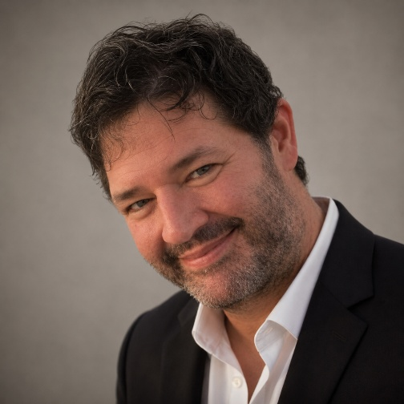

"In 1999, I spent two months in India and met families living on sidewalks."
I saw how much a small, practical act of support can matter when it arrives at the right moment. Twenty-five years later, I returned with the same question: what is the simplest help that would make the biggest difference right now?
Since then, the work has focused on direct, specific needs — temporary shelter materials during monsoon season, clean water for a school in Sierra Leone, and support for people seeking prosthetic care. My goal is to keep the attention where it belongs: on the people affected and on the small hinges that can change what comes next.
I do this work by building relationships with trusted local partners — community leaders, schools, clinics, and small organizations — who understand the context and can move quickly. Together we identify the most urgent, practical needs, agree on a simple plan, and keep communication direct. They carry out most of the work on the ground, while I help connect resources, cover costs, and act as a witness to their lives and needs, serving as a bridge between their world and mine.
Meet the on-the-ground partners Daniel works with, read about the people helped, or make a gift that puts this work in motion.